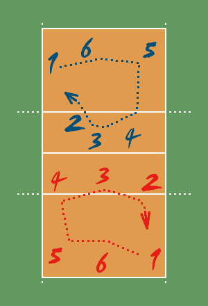

Os sistemas táticos do voleibol são baseados nas posições do voleibol, que são as seguintes:
A posição n.º 1 chama-se defesa direita, e é a posição de saque. A posição n.º 2 chama-se saída de rede. A posição n.º 3 chama-se meio de rede. A posição n.º 4 chama-se entrada de rede. A posição n.º 5 chama-se defesa esquerda. A posição n.º 6 chama-se defesa central.
